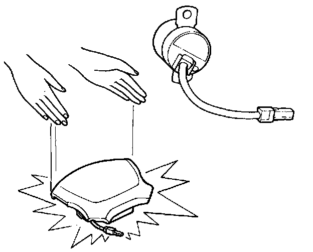
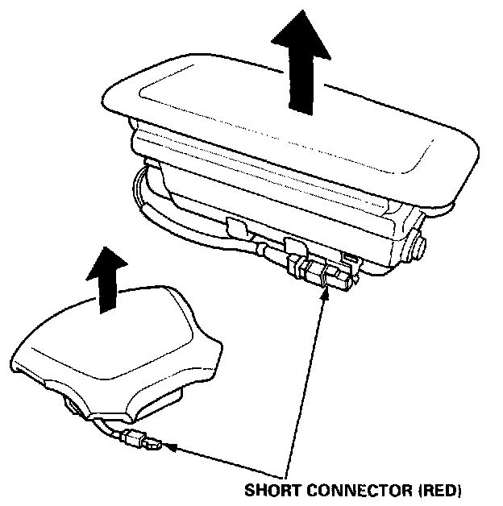

Supplemental Restraint System (SRS)
GENERAL PRECAUTIONS
Carefully inspect any SRS part before you install it. Do not install any part that shows signs of being dropped or improperly handled, such as dents, cracks or deformation:
- Airbag assembly (driver's and front passenger's)
- Dash sensors
- Cable reel
- SRS unit
- Use only a digital multimeter to check the system. If it's not a
Honda multimeter make sure its output is 10 mA (0.01 A) or less when switched to the smallest value in the ohmmeter range. A tester with a higher output could damage the airbag circuit or cause accidental deployment and possible injury.
Do not install used SRS parts from another car. When making SRS repairs, use only new parts.
Except when performing electrical inspections, always disconnect both the negative cable and positive cable at the battery before beginning work.
Replacement of the combination light and wiper/washer switches and cruise control switch can be done without removing the steering wheel:
- Combination light and wiper/washer switch replacement.
- Cruise control set/resume switch replacement.
The original radio has a coded theft protection circuit. Be sure to get the customer's code number before disconnecting the battery.
When reinstalling the SRS unit cover, be sure it snaps together properly.
AIRBAG HANDLING AND STORAGE
Do not try to disassemble the airbag assembly. It has no serviceable parts. Once an airbag has been operated (deployed), it cannot be repaired or reused.
For temporary storage of the airbag assembly during service, please observe the following precautions:,

- Store the removed airbag assembly with the pad surface up.
WARNING: IF THE AIRBAG IS IMPROPERLY STORED FACE DOWN, ACCIDENTAL DEPLOYMENT COULD PROPEL THE UNIT WITH ENOUGH FORCE TO CAUSE SERIOUS INJURY. Store the removed airbag assembly on a secure flat surface away from any high heat source (exceeding 212°F, 100°C) and free of any oil, grease, detergent or water.
CAUTION: Improper handling or storage can internally damage the airbag assembly, making it inoperative. If you suspect the airbag assembly has been damaged, install a new unit and refer to the Deployment/Disposal Procedures for disposing of the damaged airbag.